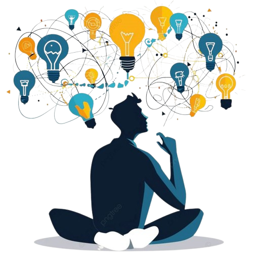

A Smarter Way to Control Your Computer
Many users depend on physical mouse devices to operate their laptops.
But situations like:
• Forgetting the mouse
• Battery dying
• Misplacing it
• Trackpad discomfort
Inspired me to design a simple backup solution using a device everyone already has — their
smartphone.

Users need a quick and reliable way to control their computer when a physical mouse is unavailable.

The flow was intentionally designed to minimize steps and reduce friction during connection.


Maximizes cursor control precision.
Prevents confusion about connection state.
Avoids unnecessary complexity.